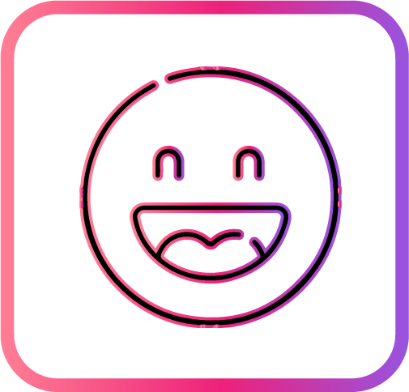
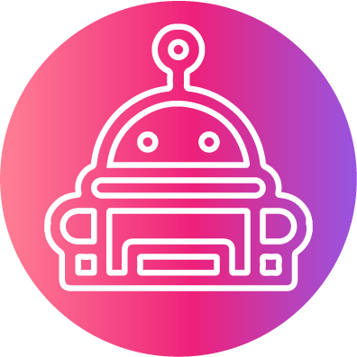

<!DOCTYPE html>
<html><head>
  <title>unibo</title>
  <meta charset="utf-8">
  <link rel="stylesheet" href="https://stackpath.bootstrapcdn.com/bootstrap/4.4.1/css/bootstrap.min.css" integrity="sha384-Vkoo8x4CGsO3+Hhxv8T/Q5PaXtkKtu6ug5TOeNV6gBiFeWPGFN9MuhOf23Q9Ifjh" crossorigin="anonymous">
  <script src="https://code.jquery.com/jquery-3.4.1.slim.min.js" integrity="sha384-J6qa4849blE2+poT4WnyKhv5vZF5SrPo0iEjwBvKU7imGFAV0wwj1yYfoRSJoZ+n" crossorigin="anonymous"></script>
  <script src="https://cdn.jsdelivr.net/npm/popper.js@1.16.0/dist/umd/popper.min.js" integrity="sha384-Q6E9RHvbIyZFJoft+2mJbHaEWldlvI9IOYy5n3zV9zzTtmI3UksdQRVvoxMfooAo" crossorigin="anonymous"></script>
  <script src="https://stackpath.bootstrapcdn.com/bootstrap/4.4.1/js/bootstrap.min.js" integrity="sha384-wfSDF2E50Y2D1uUdj0O3uMBJnjuUD4Ih7YwaYd1iqfktj0Uod8GCExl3Og8ifwB6" crossorigin="anonymous"></script>
  <script src="https://code.jquery.com/jquery-3.5.1.min.js"></script>
  <link rel="stylesheet" href="./css/index.css">
</head>
<body>
  <div class="background"></div>
  <div class="container">
    <nav class="bigmenu nav justify-content-center">
      <ul>
        <li><a href="index.html">首頁</a></li>
        <li><a href="team.html">團隊</a></li>
        <li><a href="system01.html">系統</a></li>
      </ul>
    </nav>
    <div class="content">
    
        <h1>Unibo</h1>
        <p>中原大學專屬<br>語意辨識聊天機器人<br>提供校內問答服務、接待導覽、樓唱的對答體驗</p>
    </div>
    <nav class="menu nav justify-content-center">
      <ul>
        <li><a onclick="$('html,body').animate({scrollTop:$('.first').offset().top - ($(window).height()/2-145)}, 1000);">緣起</a></li>
        <li><a onclick="$('html,body').animate({scrollTop:$('.specal').offset().top}, 1000);">特色</a></li>
        <li><a onclick="$('html,body').animate({scrollTop:$('.edu').offset().top}, 1000);">學術貢獻</a></li>
      </ul>
    </nav>
    <div class="first">
      <div class="content" >
        <p><h1>緣起</h1>
          不論是剛入中原的新生亦或是在校生，不免都會對於學校本身或是學校周遭的事物不太了解。有時剛好要辦理教務文件、申請請假等等的流程手續都令人摸不著頭緒時，即便中原官網上有提供該相關資訊，但往往不是資訊量太過龐大找不到重點，不然就是該資訊藏得過於隱密找不著，以上種種的原因讓整個搜尋過程不太親民。因此本團隊提出將語意辨識放與機器人做結合，並把技術發展的更精確而決定把談話主題範圍縮小到有關校園內的各項事物上，使其只專注在一個話題內避免跑偏題。
          假設能夠放置一個類似語意辨識聊天機器人能夠接待初來乍到的貴賓或是對於有校務疑問的同學，以流暢的對答為基礎，讓使用者在感受到人與機器之間有趣的互動而感到親切之餘，還可以解惑他們的問題，想必對於學校的形象會是一個很加分的公關大使，而且節省人力成本來擔任一個櫃檯人員。
          </p>
      </div>
    </div>
    <div class="specal" >
      <div class="container-sm">
        <div class="firstcontent row">
          <div class="col-sm-4">
            <div class="card border-0">
              
              <div class="card-body">
                <h5 class="card-title text-center">人性化</h5>
                <p class="card-text  text-center">
                  帶來與真人對話無仿的感覺，</br>
                  達到人機真正流暢溝通的交流。
                  </p>
              </div>
            </div>
          </div>
          <div class="col-sm-4">
            <div class="card border-0">
              
              <div class="card-body">
                <h5 class="card-title text-center">在地化</h5>
                <p class="card-text  text-center">
                  依據不同地區的地方慣用語，</br>將其彙整出⼀套對應詞庫。
                  </p>
              </div>
            </div>
          </div>
          <div class="col-sm-4">
            <div class="card border-0">
              
              <div class="card-body">
                <h5 class="card-title text-center">親切感</h5>
                <p class="card-text  text-center">
                  使用二次元虛擬角色，</br>讓人能夠感到有趣以及親切感
                  </p>              
              </div>
            </div>
          </div>

          <div class="col-sm-2"></div>
          <div class="col-sm-4">
            <div class="card border-0">
              
              <div class="card-body">
                <h5 class="card-title text-center">真人接待</h5>
                <p class="card-text  text-center">優點:面對任何問題能快速做出正確應答，講的話也會讓人感到有溫度</br>
                  缺點:人力成本、有限服務時間，若過了上班時間，就只能等下次才能問。</p>
              </div>
            </div>
          </div>
          <div class="col-sm-4">
            <div class="card border-0">
              
              <div class="card-body">
                <h5 class="card-title text-center">機器人Zenbo</h5>
                <p class="card-text  text-center">優點:小巧、會變換表情、跟隨功能，</br>
                  缺點:只在室內做移動，答覆制式性，</br>
                  處理指令會反應遲鈍幾秒</p>
              </div>            </div>
            </div>
          <div class="col-sm-1"></div>
        </div>

      </div>
    </div>
    <div class="edu">
      
      <h5>系統貢獻</h5>
      <p class="text-left">
        現代科技的進步，促使網際網路的蓬勃發展，造成其應用層面越來越廣，生活方式也與以往截然不同，人們利用個人助理為自己打理好食、衣、住、行、育、樂，這些皆是能夠透過智慧問答系統，在人工智慧(AI)技術裡頭其中一項重要分支-自然語言處理（Natural Language Processing, NLP)，發展出可以使人機互動的系統。然而智慧問答系統的使用領域隨著自然語言處理與人工智慧技術不斷的增長，逐漸帶動醫療、教育、娛樂等，取代各項專業人員回覆使用者的問題並解決使用者的疑問。如何讓電腦擁有理解人類語言的能力，就是自然語言處理。然而，電腦要如何理解語義？中研院資訊科學研究所的馬偉雲助研究員表示：以中文來說，最基本的，要先教電腦學會「斷詞」和「理解詞的意思」。市面上類似小米的智慧音箱（小愛同學）、Google Assistant、Siri等聊天機器人，並未做到真正的「語意理解」，像是天氣、股票、音樂等，都只是從特定資料庫裡頭「硬刻」出來的，此問答系統大多為檢索式的問答系統，這類型的問答系統得依靠一個龐大的資料庫來進行答案的搜尋，也就是說，現在流行的聊天機器人與人類聊天時，經常都是「亂回答」，只求讓話題進行下去即可。
        所以我們希望整合知識庫和智慧問答系統，藉此來提高應用聊天機器人的使用者滿意度，把接待、導覽人員搬到手機上變成虛擬的，不再是以實體的呈現方式來服務使用者，反而是更著重在發展更智慧的回答方式，以及更好的人機互動體驗，首先以本校中原大學為主要合作對象，藉由與大學合作的方法，推廣虛擬導覽系統，同時吸收反應與經驗進行優化與改良，成為一個隨處都關心你的大學版個人助理，為商業化接待導覽鋪路，在系統成熟後以投入社會市場為目標發展。
        
      </p>

    </div>

  </div>


</body></html>